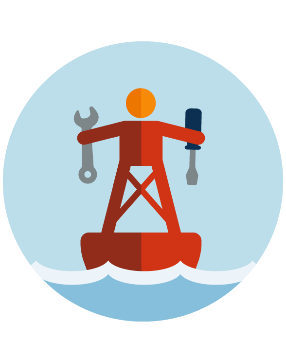

How-to

Here is a short introduction on how to make a baculus-compatible backpack. The idea is each community has different strengths and needs, and we provide two 'build logs' that fit particular communites on other pages.
The three main phases of building a baculus system are design, hardware, and software.
Design
Look at your neighboorhood in a physical sense, what are its strengths? Is there a lot of sunlight? Tall trees? Good community centers? Think about where you can setup connections, and where people are most likely to hang out and use the system.
Look at your community, what are its strengths? Experienced commuity leaders? Young eager learners?
Hardware

The three main hardware components are power, networking, and a computer.
For power, we recommend using a lithium-ion battery for a good balance of weight, price, and power density. Camping batteries have circuity that provide AC, DC, and USB power, and can be charged via AC, Solar, pedal crank, etc.
For networking, we recommend Ubiquiti for a good balance of power draw, price, and performance. A point-to-multipoint setup using litebeam sector antennae give good coverage and range from 200m to 30km (with line of sight).
For a computer, we recommend the Raspberry Pi, for its excellent price and large, supportive community.
Software
Picking software that works without being connected to the internet is crucial in disaster response scenarios. For this, we chose Scuttlebot, which was build by people who live on boats and have very intermittent connectivity. Scuttlebot is the server that stores and shares messages when it can, while Decent is the web application that can be accessed by phones, tablets, or laptops to send and view messages across the network. Both of these can be installed on the Raspberry Pi, and we provide customizable build scripts and tools in the build log.
 Visit the software howto to start building your own network!
Visit the software howto to start building your own network!